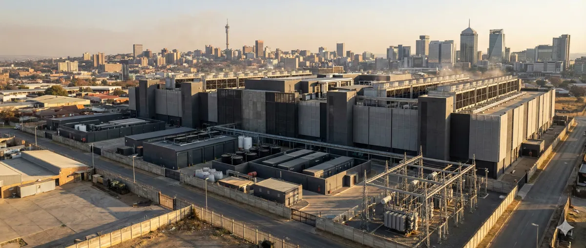

What Are Per- and Polyfluoroalkyl Substances — and Why Are They in Your Data Center’s Cooling Loop?
Before we get to the part that nobody in the data center industry is talking about, let me give you the chemistry. PFAS — Per- and Polyfluoroalkyl Substances — is not a single chemical. It is a family of more than 12,000 synthetic compounds, all sharing a common structural feature: chains of carbon atoms bonded to fluorine atoms. That carbon-fluorine (C-F) bond is the entire problem, and also the entire point.
The C-F bond has a dissociation energy of approximately 544 kJ/mol — the strongest bond in organic chemistry. Nothing in the natural world breaks it down efficiently. Not UV radiation, not biological enzymes, not soil bacteria, not the acidic environment of a human gut. This bond energy is why PFAS bioaccumulates across food chains, why it has been detected in the blood of polar bears in the Arctic and in the tissue of fish in remote mountain lakes with no industrial activity for hundreds of kilometers. Once a PFAS molecule is released into the environment, it persists. The phrase the scientific community uses is "environmentally persistent" — which is the polite way of saying it does not go away, ever, on any timescale that matters to human civilization.
The EPA's maximum contaminant level (MCL) for PFOA and PFOS in drinking water, finalized in 2024, is 4 parts per trillion for each compound. To put that in physical terms: 4 parts per trillion is roughly equivalent to one grain of sand dissolved in 2.5 million liters of water. That regulatory threshold reflects the extreme bioaccumulation potential of these compounds. It is not that you need a large dose to cause harm — it is that small doses accumulate and concentrate in biological tissue over time.
In data centers, PFAS compounds appear in three primary vectors. The first and most significant for this discussion is two-phase immersion cooling fluids: specifically, 3M's Novec 7000 (now discontinued from production), Chemours' Fluorinert FC-40 and FC-72 series, and Solvay's Galden HT series. The second vector is cable jacket coatings: PTFE (polytetrafluoroethylene) and FEP (fluorinated ethylene propylene) are used in plenum-rated cables throughout data center infrastructure. The third is historical: many legacy Halon and clean-agent fire suppression systems used PFOS-based compounds, though most have been replaced or decommissioned under the Montreal Protocol framework.
Two-phase immersion is the acute concern, and the one I have spent years working with directly. In a two-phase system, servers are submerged in a dielectric fluid that boils at a carefully engineered low temperature — in the case of Novec 7000, that boiling point is 34°C / 93°F. Chips run hot; the fluid boils directly at the chip surface, carrying away heat through the phase change; vapor rises to a condenser coil where it is recaptured and returned as liquid. The cooling efficiency is extraordinary — orders of magnitude better than air, significantly better than single-phase liquid. And until recently, the available fluids with this profile were almost exclusively PFAS compounds.
3M announced its exit from PFAS manufacturing in December 2022 and completed that exit by the end of 2025. The primary market alternatives now are Chemours' Opteon series (marketed as SF and 2P50 variants) and Solvay's Galden HT line. Both of these vendors will matter more in section four — because the replacement story is more complicated than the press releases suggest. For now, understand that the installed base of Novec 7000 systems is still operational across hundreds of hyperscale and colocation deployments worldwide, running on stockpiled fluid supply with no clear replacement timeline at scale.
The Three PFAS Vectors in Data Centers
1. Two-phase immersion cooling fluids (primary concern): Novec 7000, Fluorinert FC-40/FC-72, Galden HT series — all PFAS, all used in direct contact with server hardware.
2. Cable jacket coatings (secondary): PTFE and FEP in plenum-rated cables throughout the facility — releases PFAS particulates when cables are cut or damaged.
3. Historical fire suppression (legacy): PFOS-based Halon replacements in older facilities — most replaced, but remediation of contaminated areas is incomplete in many sites.
The Question Everyone Is Asking Wrong: “Is PFAS in Your Cooling System?” vs. “How Much Escapes Every Time You Open It?”
Here is what the media coverage gets wrong. Every article about PFAS in data centers frames the problem as a containment issue: is the sealed system leaking? Are the fittings intact? Is there floor contamination? The implicit assumption is that a well-maintained, sealed two-phase immersion system is a closed loop — that as long as the engineering is sound and the maintenance is diligent, the PFAS stays inside and the environment is protected.
That framing is not wrong. It is just missing the majority of the contamination pathway.
The real release vector is not system leaks. It is maintenance vapor release — the entirely routine, entirely expected, entirely unregulated process of opening a two-phase cooling system to perform scheduled service. This happens on a quarterly basis at minimum. In high-density GPU clusters running at or near thermal design limits, pump seal inspections happen every six weeks, and any anomalous performance reading triggers an unscheduled inspection within 24 hours. Every time a technician opens one of these systems, PFAS vapor is released directly to atmosphere. No filter, no capture system, no regulatory requirement to measure or report it.
The Regulatory Blind Spot
EPA's Toxic Release Inventory (TRI) under EPCRA Section 313 requires PFAS reporting for facilities that manufacture, process, or otherwise use PFAS above threshold quantities. The manufacturing and processing thresholds apply to chemical producers. The "otherwise use" pathway theoretically covers data centers — but only for facilities exceeding 25,000 lbs per year of a listed compound. More critically, the TRI framework requires reporting of releases — and maintenance vapor release is not measured, therefore cannot be reported. You cannot report what you do not measure, and there is no requirement to measure it.
The physics make this quantitatively significant. Novec 7000 has a vapor pressure of approximately 270 hPa at 25°C. Water, by comparison, has a vapor pressure of 32 hPa at the same temperature. This means Novec 7000 evaporates into the air approximately 8.4 times faster than water under identical ambient conditions. When a technician opens a system housing that has been running at operating temperature — even after completing a pre-maintenance drain-down cycle — the residual fluid on every surface inside that enclosure begins evaporating immediately. Pump housings, heat exchanger fins, manifold surfaces, server chassis interiors, cable management trays, all of it is coated with a thin film of Novec 7000 that will evaporate into the surrounding room air within minutes of the system being opened.
The Accelsius technical whitepaper published in 2024 on immersion cooling fluid behavior notes this vapor pressure differential explicitly, though it frames the observation in terms of fluid loss accounting rather than environmental release. When the industry itself documents that their fluids evaporate eight times faster than water at room temperature, and the maintenance cycle requires opening these systems multiple times per year, the cumulative atmospheric release over the operational life of a large deployment is not trivial. Industry estimates I have seen for maintenance-associated vapor release suggest the pathway may account for 20 to 30 times more atmospheric release than equivalent sealed-system leaks — because leaks are detected and repaired, while maintenance vapor release is simply how the work gets done.
“The industry has solved the accidental release problem reasonably well. Leak detection, fluid sensors, pressure monitoring — these are mature technologies. What nobody has solved, or even formally acknowledged, is the intentional release. Every planned maintenance window on a two-phase system involves releasing PFAS vapor to atmosphere. We call it routine service. The EPA would call it an unmonitored emission.”— Personal field observation, 12 years of data center operations engineering
The occupational exposure limits tell a secondary story. OSHA's permissible exposure limit (PEL) for Novec 7000 is 200 ppm over an 8-hour time-weighted average. That limit is set to protect workers from acute occupational exposure during their working careers. It is a reasonable industrial hygiene standard. But compare it to the EPA's environmental concern threshold for PFAS compounds in drinking water: 4 parts per trillion. The unit conversion alone should give you pause. OSHA permits workers to be exposed to 200 parts per million. EPA says 4 parts per trillion in drinking water is a public health concern. These two numbers exist in entirely different regulatory frameworks — one designed to protect workers from temporary occupational exposure, the other designed to prevent chronic population-level bioaccumulation. The vapor released during a maintenance window satisfies the OSHA standard — and then it goes into the building's air handling system, and from there, eventually, somewhere.
Inside the Tank — What a Maintenance Window Actually Looks Like
The first time I opened a Novec 7000 two-phase system, I was not prepared for how fast the fluid disappeared. The maintenance preparation had been straightforward — we had run the system drain cycle, pulling the bulk of the fluid into a sealed collection drum using the integrated transfer pump. The readout said we had recovered about 94% of the charge volume. I cracked the housing seal, and within about forty-five seconds of the enclosure being open, the condensation on the internal surfaces had evaporated. Not drained. Not wiped. Evaporated. Into the room. Into the air I was breathing through a half-face respirator. Into the facility's HVAC return plenum six meters above my head.
That remaining 6% of the fluid charge — representing anywhere from 3 to 12 liters in a standard 10-rack cluster — went to atmosphere in the time it takes to make a cup of coffee. And that was the expected result. That is the process working correctly.
A standard two-phase immersion cluster holds 50 to 200 liters of Novec 7000 per rack. A 10-rack AI training cluster therefore contains between 500 and 2,000 liters of PFAS fluid. The integrated drain system recovers approximately 94-96% of that volume under ideal conditions. The remaining 2-6% — representing 10 to 120 liters depending on system size — coats every internal surface and evaporates directly to atmosphere during the maintenance window. This is not a failure mode. This is the design operating as intended. The fluid was engineered to evaporate at low temperatures. It does exactly that.
Let me walk through the actual maintenance sequence for a quarterly inspection on a mid-sized two-phase system. First, the pre-work: schedule a maintenance window of six to eight hours for a standard 10-rack cluster. Brief the team — typically two or three technicians. Gather PPE: Tyvek suits, nitrile gloves, half-face respirators with combination cartridges (organic vapor plus P100 particulate). Pull the fluid data sheets and safety data sheets for pre-task review. Set up the portable recovery drum and transfer lines.
The drain sequence begins with initiating the automated transfer pump cycle. Most modern two-phase systems have an integrated pump that pushes fluid from the tank into a sealed recovery drum. This takes 30-45 minutes for a 10-rack system. When the pump cycle completes, you have recovered the bulk of the fluid — but the system still holds substantial residual volume. The headspace above the fluid level in the tank has been saturated with vapor at roughly 270 hPa partial pressure throughout the operation. The moment you open the drain valve to initiate the cycle, that headspace vapor begins exchanging with room air. Step one of the maintenance sequence has already released PFAS vapor.
Opening the main access hatch is step two. The interior of the enclosure is now coated with a thin liquid film everywhere the fluid has been in contact — server chassis surfaces, copper heat exchangers, manifold fittings, pump housings, the structural members of the rack frames. That film has a vapor pressure eight times that of water. At 22°C ambient temperature, it is aggressively volatilizing into the enclosure's interior air. When you open the hatch, that vapor-laden air exchanges immediately with the room. For the remainder of the maintenance window — which might be three to five hours for a thorough inspection — the residual coating is continuously evaporating.
| Maintenance Step | PFAS Release Mechanism | Estimated Volume | Reported to EPA? |
|---|---|---|---|
| Drain valve opening (headspace exchange) | Saturated vapor in tank headspace displaced by air | Low — headspace volume dependent | No |
| Bulk fluid transfer to recovery drum | Surface film on transfer lines, drum vent | Minimal — contained circuit | No |
| Access hatch opening | Residual surface film evaporation, enclosed vapor exchange | Primary release pathway | No |
| Component inspection & handling | Evaporation from wetted server chassis, heat exchangers, pump seals | Significant — multi-hour exposure | No |
| Supply drum opening (refill) | Vapor from drum headspace, transfer line purge | Moderate — drum size dependent | No |
| Total maintenance window release | All pathways combined | 2–6% of system charge volume | Zero reporting required |
The workers wear respirators — that is standard operating procedure and non-negotiable in any facility operating to a reasonable safety standard. But respirators protect the workers. They do not capture the released vapor. The PFAS that does not go into a technician's lungs goes into the return air plenum, into the facility's exhaust system, and eventually into the outdoor air. Where it goes from there is a function of atmospheric dispersion, local geography, prevailing wind patterns, and proximity to water sources. The facility does not track it. The EPA does not require tracking it. To the regulatory framework, that release did not happen.
Now multiply this by scale. A hyperscale AI campus deploying two-phase cooling at meaningful density might have 50 to 200 racks of immersion-cooled compute. Quarterly maintenance windows mean four of these events per year, per system cluster. Monthly monitoring of GPU-dense systems means the frequency is higher. Over a five-year operational period, a mid-sized two-phase deployment will have undergone somewhere between 20 and 60 planned maintenance windows, each releasing unmeasured quantities of PFAS vapor to atmosphere. No one is counting. No one is required to count.
The “PFAS-Free” Replacement Problem: A Forever Chemical With a Different Name?
The industry has noticed the problem. Or at least, the industry has noticed that the public and regulators have noticed the problem, which is close enough to drive procurement decisions. The response has been a wave of announcements about PFAS-free cooling alternatives. Chemours markets its Opteon 2P50 as a next-generation immersion fluid with significantly reduced environmental persistence. Green Mountain Data Centers in Norway has committed to operating without fluorinated fluids. Multiple hyperscalers have issued sustainability targets that reference reducing or eliminating PFAS in cooling systems by 2030. This is presented as the industry getting ahead of the problem.
The engineering reality is considerably more complicated, and in some respects, more concerning than the headlines suggest.
Chemours' primary replacement offering, Opteon 2P50, is based on HFO-1336mzz-Z, a hydrofluoroolefin compound. The "hydrofluoroolefin" classification is meaningful: HFOs contain carbon-fluorine bonds (which is why they have the thermal and dielectric properties needed for immersion cooling), but they also have a carbon-carbon double bond that makes them more reactive — meaning they break down in the atmosphere significantly faster than traditional PFAS. Opteon 2P50 has an atmospheric half-life of approximately 26 days, compared to effectively infinite persistence for PFOA and PFOS. This is a genuine improvement. It is not, however, the end of the story.
The primary atmospheric breakdown product of HFO-1336mzz-Z is trifluoroacetic acid — TFA. TFA contains three C-F bonds. TFA is highly water-soluble and integrates rapidly into the hydrological cycle: it washes out of the atmosphere in rainfall, accumulates in surface water and groundwater, and does not biodegrade under natural conditions. TFA is not regulated by the EPA. It is not monitored by the EPA. It is not listed under PFAS regulatory frameworks because it was not among the compounds originally targeted by PFAS remediation efforts, and because its association with HFO degradation is a relatively recent area of scientific focus.
Studies from European research groups — notably work published through the German Environment Agency (Umweltbundesamt) — have documented rising TFA concentrations in precipitation, surface water, and groundwater across monitoring sites in Western Europe over the past two decades, correlated with the increasing global use of HFC and HFO refrigerants. The researchers do not describe TFA as definitively harmless. Its health effects are under active investigation, with particular attention to reproductive and developmental impacts at concentration levels that are already measurable in some water sources.
The Regulatory Approval Accelerator
A Grist investigation published in April 2026 reported that the EPA, under a directive from the Trump administration, is fast-tracking environmental review of novel data center cooling chemicals, potentially approving new compounds with less than one year of production safety data. If accurate, this means facilities could be deploying HFO-based replacement fluids operating under expedited review — compounds whose long-term breakdown product profiles are not fully characterized — under a regulatory framework designed to accelerate approvals rather than require comprehensive pre-market safety assessment.
3M's discontinued alternative pathway adds another layer of complexity. Before exiting PFAS entirely, 3M developed Novec 649 (also designated FK-5-1-12) as a lower-global-warming-potential alternative to earlier Novec compounds. Novec 649 has been marketed and deployed as a cleaner option. Its atmospheric half-life is measured in days to weeks rather than forever. But its atmospheric breakdown products include PFAS-like compounds — specifically, shorter-chain fluorinated carboxylic acids that retain C-F bonds and environmental persistence, just at a smaller molecular scale. The "shorter chain" PFAS replacement problem is a known issue in the broader PFAS regulatory debate: compounds engineered to be shorter-chain (like PFBS as a replacement for PFOS) turned out to be mobile in water and persistent in the environment, simply in a different way than their predecessors.
Genuinely PFAS-free alternatives for immersion cooling do exist. Mineral oil is the most mature: single-phase mineral oil immersion has been in use at data centers for over a decade, is well-understood from a fire safety and fluid handling perspective, and contains no fluorinated compounds. The engineering constraints are real, however. Single-phase mineral oil works effectively for rack densities up to approximately 80 kW per rack. AI training servers, particularly dense GPU configurations running at or near thermal design limit, can exceed 100 to 130 kW per rack in contemporary deployments. At those densities, single-phase mineral oil cannot remove heat fast enough without either unacceptably high fluid flow rates (requiring large, expensive pumping systems) or accepting elevated operating temperatures that reduce component life.
Novec 7000 (3M) — Legacy Installed Base
PFAS compound (C3F7OCH3). Boiling point 34°C, vapor pressure 270 hPa. Exceptional dielectric and thermal properties. Production ended 2025 — industry running on stockpiled supply. Environmental persistence: effectively indefinite.
Opteon 2P50 (Chemours) — HFO Replacement
HFO-1336mzz-Z based. Marketed as PFAS-free. Atmospheric half-life ~26 days. Primary breakdown product: trifluoroacetic acid (TFA) — persistent in water, unregulated, C-F bonds retained. Regulatory status of TFA: not assessed.
Mineral Oil — Single Phase
Genuinely PFAS-free. No fluorinated compounds. Well-characterized safety and fire profile. Density limit ~80 kW/rack. Higher viscosity than fluorinated fluids. Post-service server cleaning is more labor-intensive. No regulatory concern for environmental persistence.
The practical engineering reality is that no replacement currently available on the commercial market achieves the complete combination of properties that made Novec 7000 the default choice for high-density two-phase immersion: low boiling point enabling efficient two-phase heat transfer, high dielectric strength enabling safe direct server submersion, low viscosity enabling passive or low-energy fluid circulation, non-flammability, material compatibility with standard server components including plastics and elastomers, and minimal environmental persistence. Each alternative trades one of these properties for improvement in another. HFOs give you lower atmospheric persistence but raise TFA concerns. Mineral oil gives you PFAS-free status but limits density and adds operational complexity. Engineered water-glycol solutions work for single-phase cold plate cooling but are not immersion candidates at all.
The EPA's Safer Choice program, which evaluates chemical alternatives for environmental and health impact, explicitly excludes halogenated compounds — meaning compounds with C-F or C-Cl bonds — from its preferred certification pathway. HFOs, because they contain C-F bonds, fall outside the Safer Choice preferred category, even as they are being marketed across the industry as the PFAS-free transition solution. The regulatory framing and the marketing framing are not describing the same thing. When a vendor says "PFAS-free," they typically mean their compound does not appear on the EPA's current PFAS candidate list. They do not necessarily mean it breaks down to non-fluorinated compounds, or that its breakdown products are assessed for safety, or that it has cleared Safer Choice evaluation. The nomenclature is doing a great deal of work in those two syllables.
The Unanswered Question No Vendor Will Address
If a data center deploys 500,000 liters of HFO-1336mzz-Z across a campus-scale immersion cooling deployment, and 2-5% of that volume is released to atmosphere annually through maintenance vapor release, and 100% of that atmospheric release degrades to trifluoroacetic acid within 26 days, what is the cumulative TFA loading on local watershed systems over a 10-year operational period? This is a solvable engineering calculation. No vendor, no hyperscaler, no regulatory body has published a model for it. The data to populate that model does not exist — because nobody is measuring the maintenance vapor release in the first place.
Why Your Existing Two-Phase System Cannot Simply Switch to PFAS-Free Alternatives
The question operators receive from sustainability officers and legal teams is always some version of: "Can we just drain the Novec and replace it with the new PFAS-free fluid?" The answer is no — and the reason reveals why the PFAS transition timeline measured in press releases is completely disconnected from the transition timeline measured in engineering reality.
Two-phase immersion cooling systems are not fluid-agnostic. Every component of the thermal design — the bath geometry, the vapor plenum volume, the condenser sizing, the pump specifications, the pressure relief valves — is engineered around the specific thermodynamic properties of one working fluid. Boiling point. Surface tension. Viscosity. Dielectric constant. Vapor pressure curve. These are not interchangeable parameters. Novec 7000 has a boiling point of 34°C. Opteon 2P50, 3M's successor HFO candidate, has a boiling point of approximately 29°C. A 5°C shift in boiling point is not a minor adjustment. It fundamentally changes where in the server the phase transition occurs, the vapor volume generated per unit heat load, and the entire condenser heat rejection loop design. The condenser that was sized for Novec 7000's vapor pressure curve is undersized for Opteon 2P50 at the same heat load. You have changed the thermodynamic system, not just the fluid.
The materials compatibility problem compounds this. Novec 7000 is known to attack certain elastomers — natural rubber seals and some neoprene formulations swell or degrade in prolonged Novec exposure. The o-rings, pump seals, and expansion joints in an existing Novec system were specified for Novec compatibility. The seal materials that are Novec-compatible are not necessarily Opteon-compatible, and vice versa. A fluid swap without replacing all wetted elastomeric components is an invitation to a slow-leak scenario — the worst possible outcome from a PFAS release standpoint. You would be trading a controlled vapor release during planned maintenance for an uncontrolled chronic seep from degraded seals, with no monitoring in place to detect it.
The capital exposure is substantial. A two-phase immersion cooling deployment costs $2–4 million per megawatt of IT load. A 10 MW facility has $20–40 million of cooling infrastructure. Industry estimates for mid-life fluid replacement — accounting for all wetted component replacement, engineering labor, recommissioning testing, and fluid disposal — run 30–45% of original cooling capex. That is $6–18 million for a single facility before a dollar of new fluid is purchased.
The disposal math alone is prohibitive. PFAS-containing fluids are classified as hazardous waste requiring licensed high-temperature incineration or specialized destruction facilities. Current disposal pricing runs $8–$15 per liter for Novec 7000 and similar fluorinated fluids. A modest 100,000-liter immersion bath — representing roughly 2–3 MW of IT load — generates $800,000 to $1.5 million in disposal fees before the first replacement component is ordered. The licensed disposal infrastructure in the United States currently has limited throughput. If multiple large operators attempted simultaneous fluid replacement, they would encounter queue delays of 18–36 months before licensed facilities could process the volume.
3M ceased manufacturing PFAS fluorinated fluids in December 2025. But cessation of new production does not eliminate the installed inventory. Existing facilities have years of stockpiled fluid for topping off systems after maintenance vapor loss. Gray market supply is already visible: non-US manufacturers in China and India, operating under less restrictive regulatory environments, have increased production of fluorinated fluids chemically equivalent to Novec 7000 and are actively marketing to data center operators through intermediaries. There is no customs mechanism that currently screens for these compounds at import.
The operational reality is that no commercially rational operator will voluntarily replace a mid-life two-phase PFAS system when the replacement cost is $6–18 million, the disruption means weeks of IT load migration, and the regulatory obligation to do so does not exist. Facilities with existing Novec systems will run them to end-of-life — 10 to 15 years from commissioning date. The "transition" to PFAS-free two-phase cooling is therefore a 10–15 year replacement cycle, not an announcement cycle. Every vendor press release claiming a PFAS-free transition is describing new installations only. The existing installed base will continue releasing PFAS through every maintenance window until those systems are decommissioned.
Most Data Centers Don't Actually Need Two-Phase PFAS Cooling — And the Industry Knows It
Here is the fact that rarely appears in cooling vendor literature: two-phase immersion cooling provides genuine, engineering-justified efficiency advantages only at extremely high rack densities. The threshold is approximately 100 kW per rack minimum, with the strongest technical case made above 150 kW per rack. Below that threshold, direct-to-chip liquid cooling with water-glycol cold plates delivers equivalent thermal performance without fluorinated working fluids, without immersion bath infrastructure, and at substantially lower capital cost.
The Uptime Institute's 2025 Global Data Center Survey puts the current average rack density in hyperscale data centers at 15–25 kW per rack. Even the GPU clusters that drove the immersion cooling conversation are not uniformly high-density. A fully loaded 8-GPU NVIDIA H100 rack reaches approximately 80–100 kW under sustained AI training load. Most hyperscaler GPU deployments are not fully saturated at all times. The effective average density across GPU cluster pods, accounting for supporting infrastructure racks and partial utilization periods, is substantially below the nameplate maximum.
Apply the 100 kW threshold as the technical justification bar, and the result is stark: fewer than 5% of operating data center capacity worldwide currently exceeds the rack density at which two-phase immersion cooling provides advantages that cannot be replicated by direct-to-chip single-phase liquid cooling. That 95% figure is not a fringe calculation — it is consistent with publicly available capacity data from Uptime Institute, the Lawrence Berkeley National Laboratory data center efficiency reports, and the IEA's global data center energy analysis. The operators and analysts who work with this data know the number.
What the remaining 95% could use instead: direct-to-chip cooling with cold plates circulating water-glycol loops. Completely PFAS-free. Proven at scale across virtually every hyperscaler's GPU cluster deployment. The engineering basis is not experimental. Meta's AI training clusters, Google's TPU pods, Microsoft's Azure AI infrastructure — none of these use two-phase PFAS immersion. They use water-based cooling delivered directly to the processor package. The companies that have built more AI compute than any other entity on earth chose PFAS-free approaches for their highest-density applications.
Why then did two-phase immersion gain commercial traction so disproportionate to its actual technical applicability? The marketing narrative is straightforward: "immersion cooling equals maximum efficiency." In an era when PUE had become the primary metric by which operators were judged by sustainability-conscious customers and regulators, the promise of sub-1.03 PUE through total fluid immersion was compelling — even for facilities operating at 20 kW per rack where immersion provides almost no measurable efficiency gain over well-designed air cooling, let alone over cold-plate liquid cooling.
Early movers in two-phase immersion — Submer, LiquidStack, GRC among them — positioned their technology as the forward-looking, high-performance solution. Operators chose it partly for competitive signaling and future-proofing narrative, not purely on engineering merit for their actual load profile. The financial exposure this created is being quietly absorbed by the industry rather than disclosed. The environmental liability — an installed base of PFAS-dependent infrastructure built primarily for marketing reasons at densities that never required it — has been transferred to the public in the form of unmonitored vapor releases from maintenance events. That liability does not appear on any operator's balance sheet. It is not reflected in the capital project approval that authorized the installation. It is invisible to the investors and regulators who signed off on these deployments.
This is not an argument against immersion cooling as a technology category. Single-phase immersion using mineral oil or synthetic ester dielectric fluids is genuinely useful, particularly for edge deployments, industrial environments, and high-density inference clusters. These fluids are PFAS-free, have well-characterized safety profiles, and do not generate unmonitored fluorinated vapor releases during maintenance. The problem is specifically two-phase PFAS immersion deployed at sub-threshold rack densities — which is to say, the majority of two-phase PFAS immersion currently operating.
What Actually Needs to Happen — A Protocol No Regulator Has Proposed Yet
The regulatory gap described in this article is not a gap in scientific knowledge. The measurement technology exists. The regulatory frameworks exist. What follows is a practical protocol that could be implemented without new legislation, new measurement science, or new agency authority. It requires only that existing frameworks be applied to an industry that has been exempt from them by default.
1. Mandatory maintenance event reporting. Every planned maintenance window on a two-phase immersion system should trigger an environmental report filed with EPA's Toxics Release Inventory (TRI) system. The report should include: volume of working fluid present in the system before the maintenance window opens; estimated vapor release volume during the open period, using the fluid's published vapor pressure curve and open surface area as inputs; total time the system was open to atmosphere; and disposal volumes if fluid was removed. None of this requires new instrumentation. It requires an engineering calculation and a form. The TRI system already has PFAS reporting categories. The mechanism exists. What does not exist is the requirement to use it for data center maintenance events.
2. Pre-maintenance vapor capture protocol. Industry standard should require vapor capture shrouds during system opening — analogous to refrigerant recovery requirements under Clean Air Act Section 608, which mandates refrigerant recovery before any servicing of systems containing regulated refrigerants. Novec 7000 recovery units exist commercially for precisely this purpose; they are marketed to semiconductor fabrication facilities that use Novec for wafer cleaning. The technology is available. The protocol would require shrouding the open bath, operating vapor recovery equipment during the open period, and logging the recovered volume. This would reduce maintenance vapor release by an estimated 60–80% based on recovery efficiency data from the semiconductor sector.
3. Groundwater monitoring requirement. Any facility operating PFAS-containing cooling fluids and located within 2 km of a surface water body or residential water supply should be required to conduct quarterly PFAS groundwater sampling from monitoring wells at the facility boundary. The EPA's current Maximum Contaminant Level of 4 parts per trillion for PFOA and PFOS provides a clear regulatory trigger threshold. If quarterly sampling exceeds the MCL, the operator is required to identify and remediate the emission pathway. This is operationally straightforward for a new facility. For an existing facility without monitoring wells, installation costs approximately $15,000–$40,000 per well — a rounding error relative to the PFAS fluid inventory value on site.
4. Replacement fluid testing standard. No compound marketed as a "PFAS-free" alternative should be commercially deployed in data centers without a minimum of five-year environmental fate data for all degradation products, including trifluoroacetic acid accumulation modeling in aquatic systems. Current regulatory review of HFO-1336mzz-Z cites an atmospheric half-life of approximately 26 days as evidence of environmental acceptability. That 26-day figure describes degradation in the atmosphere. It says nothing about TFA accumulation rates in receiving water bodies, TFA persistence in soil and sediment, or the cumulative loading at watershed scale from a large deployed base over a 10-year operational period. The data to conduct this analysis does not exist, because it has not been required. The compound should not be in large-scale commercial deployment until it does.
5. Rack density requirement for new two-phase deployments. Any new two-phase PFAS immersion cooling installation should require demonstrated average IT load above 100 kW per rack as a precondition for permitting. Sub-threshold deployments should be prohibited unless the operator can demonstrate, through engineering analysis reviewed by a licensed professional engineer, that equivalent thermal performance cannot be achieved with a PFAS-free direct-to-chip liquid cooling approach. This single requirement, applied prospectively to new installations, would prevent the majority of future unnecessary PFAS deployment. It would not affect existing installations. It would not prohibit any technically justified application of the technology.
6. Lifecycle liability disclosure. Operators should be required to disclose the estimated cost of PFAS fluid disposal at end-of-system-life in capital project approval documentation. Currently this liability is invisible. The $1–$2 million per installation in disposal fees is not modeled, not reserved, and not disclosed to investors or regulators. Treating it as a disclosed lifecycle liability — similar to how asset retirement obligations are handled in oil and gas accounting — would bring it into the decision calculus at the point when the installation decision is made, rather than decades later when the obligation becomes unavoidable.
None of these proposals require new science. The measurement protocols exist. The regulatory frameworks exist. What doesn't exist is the political will to apply them to an industry that has been granted a decade of regulatory deference in exchange for building AI infrastructure.
The Precedent Already Exists
Clean Air Act Section 608 has required refrigerant recovery before servicing since 1993. The data center industry has been operating two-phase PFAS systems for over a decade with no equivalent requirement, despite PFAS compounds having significantly higher environmental persistence than the HFCs they regulate. The regulatory asymmetry is not a technical necessity — it is a policy choice that has never been formally examined.
PFAS Risk Assessment Calculator
Estimate your facility's PFAS exposure profile, regulatory timeline (2024–2029), and environmental liability based on cooling configuration and operational parameters.
Monte Carlo analysis requires Pro access
Regulatory timeline requires Pro access
Sensitivity analysis requires Pro access
Strategic roadmap requires Pro access
Educational estimates only. Illustrates relative PFAS risk profiles based on published engineering and environmental data (EPA, EU ECHA, Uptime Institute, LBNL). Not a substitute for professional environmental assessment, site-specific PFAS sampling, TRI reporting advice, or regulatory compliance review. Vapor release estimates use published vapor pressure data and open-surface engineering models.